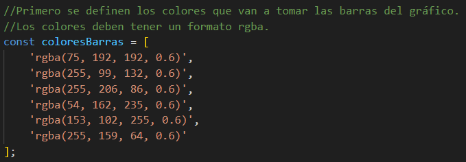

Tutorial de Chart.js
El gráfico inferior ha sido creado utilizando la biblioteca Chart.js. Dejo enlace para acceder a su página web: Chart.js
¡A continuación, te cuento de manera rápida el paso a paso de cómo hice el gráfico!
- Paso 1: Llamar a la libreria Chart.JS en nuestro código. A fecha 13/08/2023 el enlace es el siguiente:
"https://cdn.jsdelivr.net/npm/chart.js". Debe ir situado dentro de una etiqueta script y se puede ubicar al final del html. - Paso 2: En el HTML se designa el espacio donde va a ir ubicado el gráfico. Bajo este texto se ven las líneas de código que hacen referencia al gráfico que se va a generar.
- Paso 3: En nuestro script generamos la lógica detrás de la simulación. Se genera con el objeto math de manera aleatoria los números que en teoría se obtendrían con el dado. Se guardan en una variable específica y después esos datos serán los mostrados.
- Paso 4: A la hora de empezar con el código del gráfico, se generan primero los colores con los que se pintará el gráfico cuando se cree de manera dinámica. 
- Paso 5 - "Repaso de la lógica": Repaso de la lógica detrás de la simulación del lanzamiento del dado. Revisar código en Github para ver todo el detalle.
- Paso 6: Generar el gráfico de manera dinámica aprovechando los resultados de la simulación.